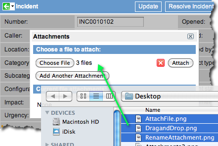
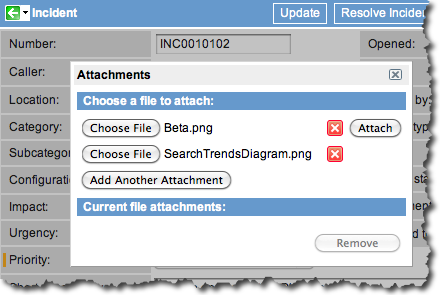
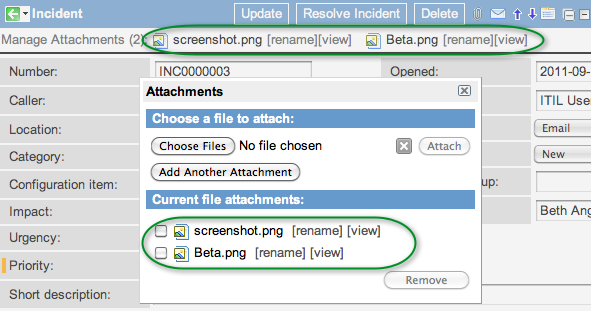
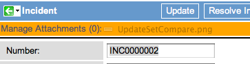
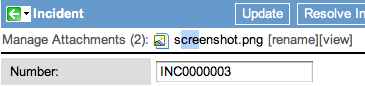
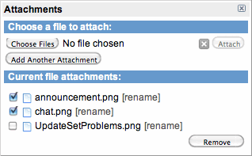

Uploading Attachments
| |
Note: This article applies to Fuji. For more current information, see Add an Attachment at http://docs.servicenow.com
The ServiceNow Wiki is no longer being updated. Please refer to http://docs.servicenow.com for the latest product documentation. |
Contents
1 Overview
You can upload a file as an attachment to an incident, knowledge article, change request, or other record in ServiceNow. Attachment file size is not limited by default.
| |
Note:
|
| |
Warning: Uploading large attachments might lead to issues with the user's active session on the instance. |
2 Managing Attachments
To manage attachments on a record:
- Navigate to the record (example, an incident record).
- Click the paper clip (
 ) in the upper right or the Manage Attachments button (if files are already attached).
) in the upper right or the Manage Attachments button (if files are already attached).
- From the Attachments pop-up window you can add, delete, or rename attachments.
- The number of attachments for a record is listed on the Manage Attachments button.
{kind=link}
3 Adding an Attachment
Do not use the Upload File module in the System Definition application. This module is not compatible with multi-node instances. Instead, attach a file directly to a record.
- Navigate to the record (example, an incident record).
- Click the paper clip () in the upper right.
- Click Choose File (or Browse, depending on your browser) and navigate to a file. You can upload multiple files in one of the following ways:
- Select multiple files at the same time. This feature is not supported by Internet Explorer.
- Select files
- Add each file on a separate line. Click Add Another Attachment, and then click Choose File on the next line. Repeat until all desired files are selected. This feature is available in all supported browsers.
- Select files on separate lines
- Click Attach. Attached files appear in the Current file attachments list and at the top of the form. A message appears if a file is not attached because it is too large or is a restricted file type (administrators can configure these limits).
- Attached files
- Close the pop-up window to return to the form.
{kind=link}
{kind=link}
{kind=link}
| |
Note: Empty attachments (file size of 0 kb) are not supported. |
4 Attaching Files with Drag-and-Drop
Drag files from your computer to a form and upload them asynchronously. This functionality is supported in Firefox 3.6 or later and Chrome. Support will be added for other web browsers as they implement the HTML5 specification.
To attach files with the drag-and-drop feature:
- Navigate to the ServiceNow record.
- On your computer, browse to the files to attach.
- Select the files on your computer and then drag them over the header bar on the ServiceNow form.
- When the attachments header appears orange, release the mouse button to begin the upload.
- Drag-and-drop upload
- When the upload is complete, the file name is added to the attachments header. Upload speed depends on the file size and the speed of your network connection.
{kind=link}
| |
Warning: Do not navigate away from the record while an upload is in progress. The upload must be completed for the file to be attached. |
5 Renaming Attachments
To rename a file that is attached to a record:
- Navigate to the record.
- Click [rename] beside the file name at the top of the form.
- Edit the file name and press Enter.
- Rename the attachment
-
{kind=link}
| |
Note: Press Esc instead of Enter to undo your changes and cancel rename. |
6 Deleting Attachments
To delete attachments from a record:
- Navigate to the record.
- Click Manage Attachments in the upper left corner of the record or click the paper clip.
- Select the check boxes next to the attachments to delete.
- Click Remove.
- Close the pop-up window to return to the form.
- Delete attachments
-
{kind=link}